Design
Mechanism Design and Analysis
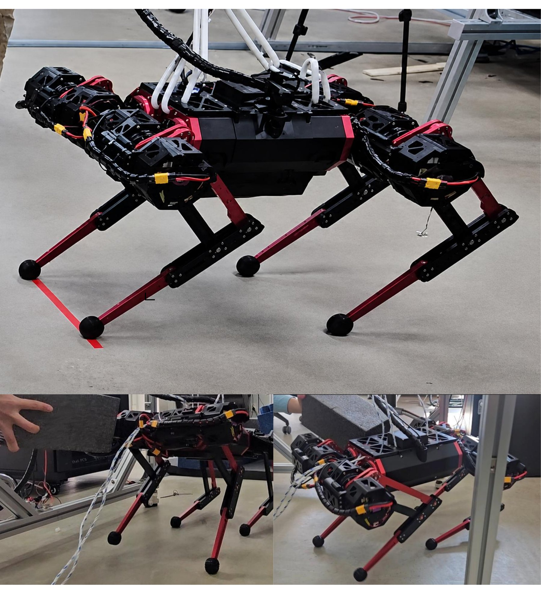
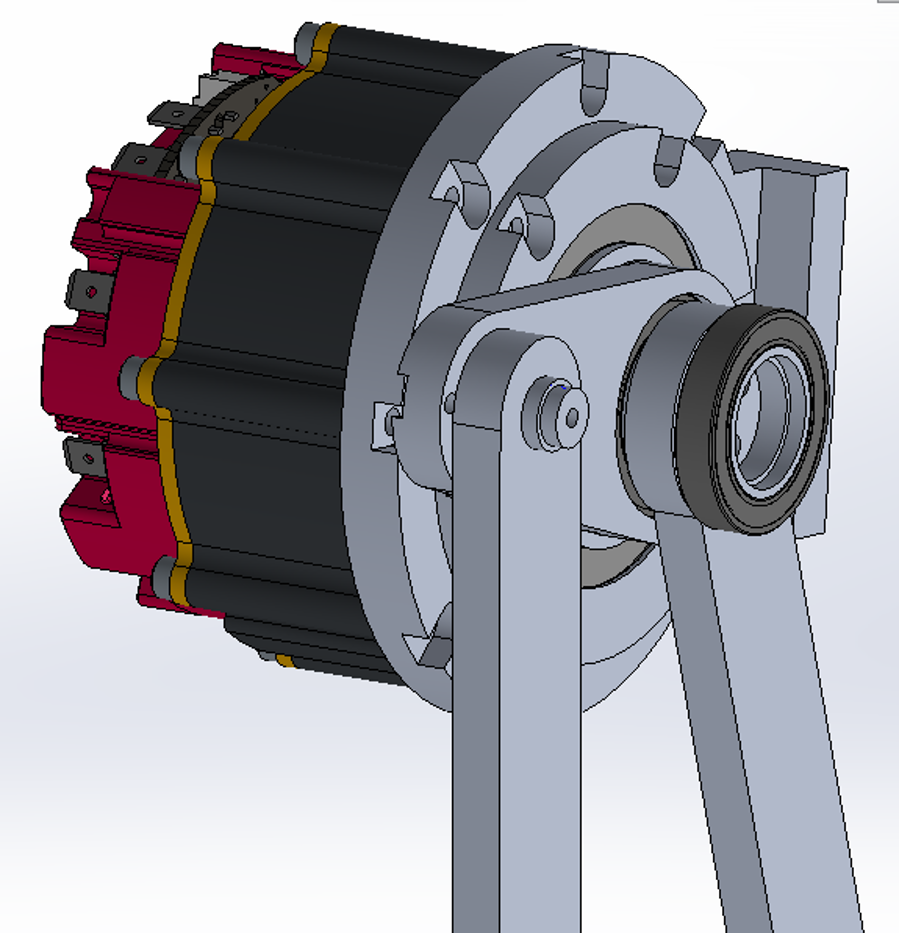
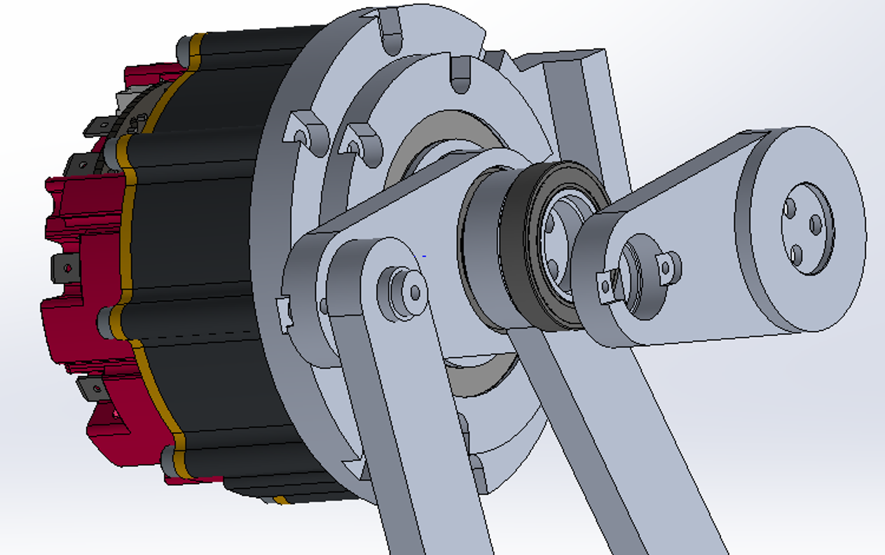
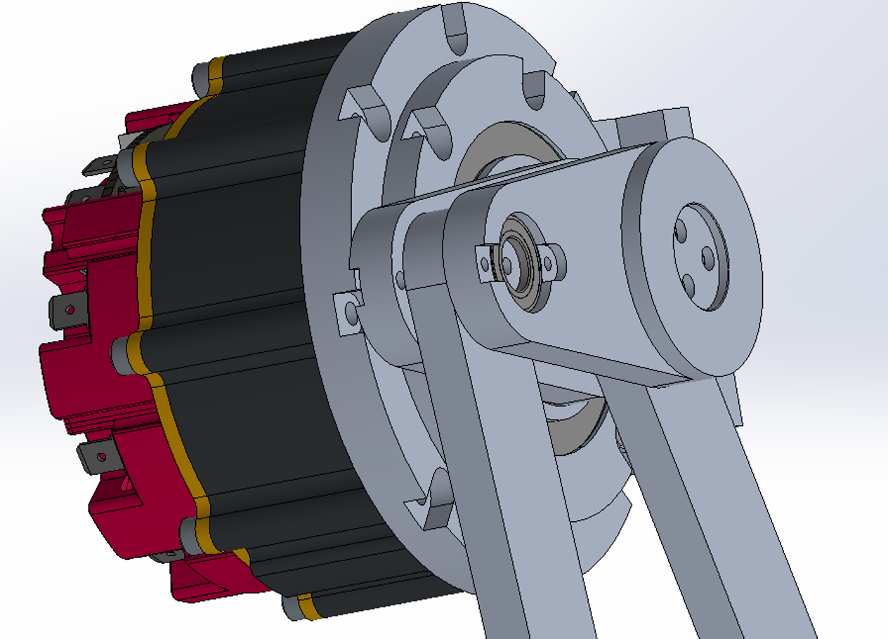
Graduate Researcher, DGIST
I study dynamics and control-aware learning for sim-to-real legged robots, focusing on dynamics normalization and middle control layers.
Research Focus
I focus on dynamics normalization and a middle control layer for sim-to-real legged robot learning.
Design




System ID
Learning
Control
Programming
Research Directions
Using observer-based estimates to expose contact force, disturbance, and unmodeled dynamics to low-level controllers and learned policies.
Studying how action space, actuator model, delay, domain randomization, and safety layers affect hardware transfer.
Comparing position-target policies, torque-level policies, impedance control, and admittance control under matched disturbance tests.
Selected Work
A compact overview of my current work. Detailed figures, design analysis, and media are collected on the project page.
Mechanical design, fabrication, and assembly of a parallel-link quadruped platform with FEA-based structural checks.
Open full project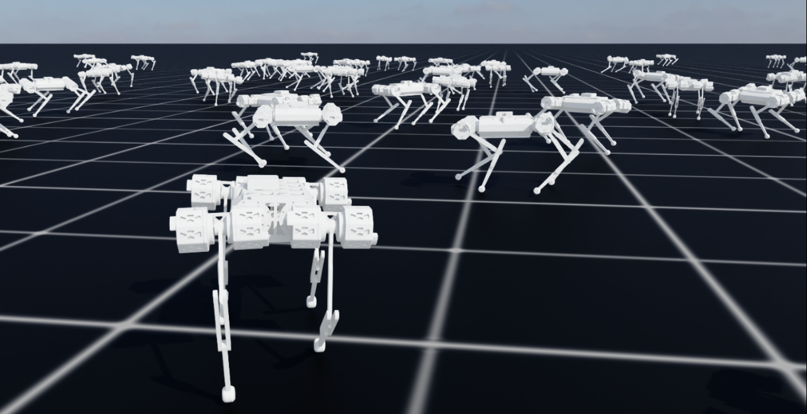
Learning-oriented sim-to-real pipeline built around hardware consistency, actuator-aware low-level control, and repeatable validation.
Open full projectControl
Hardware running experiment using a reinforcement-learning locomotion controller on the parallel-link quadruped platform.
Open full projectProgramming
Experiment software for controller validation, data logging, simulation workflows, and hardware-in-the-loop robot testing.
Open full projectPublications
Research on legged robot dynamics, learning, control, and estimation, alongside rover-terrain interaction.
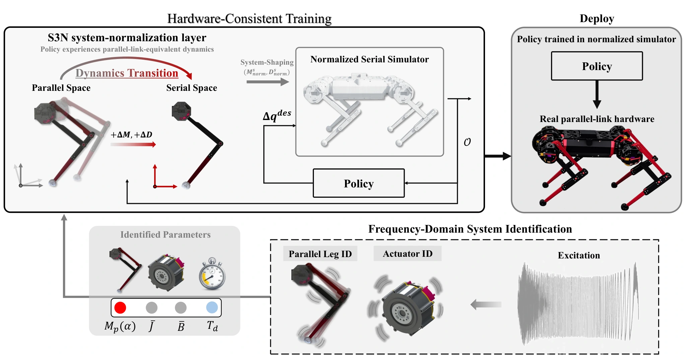
Restores actuator inertia, damping, and residual linkage inertia lost when parallel-link legs are represented by serial-tree simulators. Hardware-informed Simulator-Side System Normalization (S3N) improves motion and force consistency, reducing the phase-averaged, command-normalized locomotion gap from 17.3% to 9.9%.
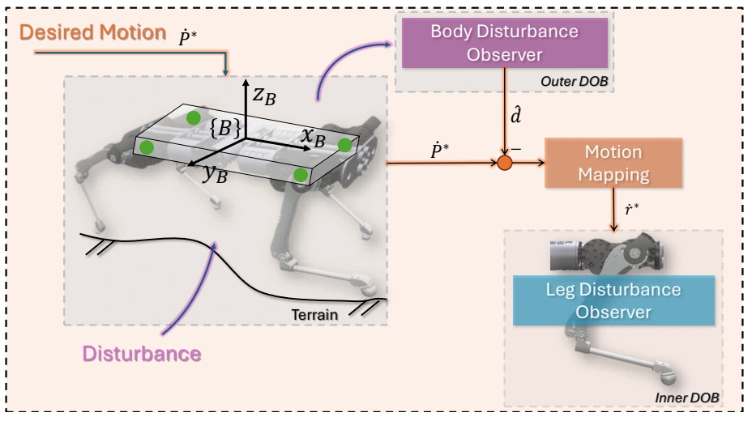
Combines an inner-loop leg disturbance observer with an outer-loop Body DOB for quadruped orientation control. The outer observer estimates roll and pitch disturbances and maps the compensation into leg radial velocity commands, while the inner observer compensates leg dynamics and friction.
Coordinates independently controlled SLIP legs through touchdown-triggered period adaptation. Correcting inter-leg phase drift prevents early-touchdown-induced gait collapse and maintains trunk velocity tracking in MuJoCo simulations under constant and changing speed commands.
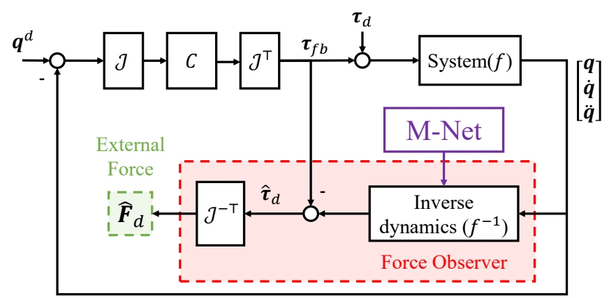
A physics-informed dynamics network combines Lagrangian mechanics with temporal friction modeling to estimate ground reaction forces without dedicated force sensors. MuJoCo experiments on a quadruped leg evaluate joint torque and GRF estimation.
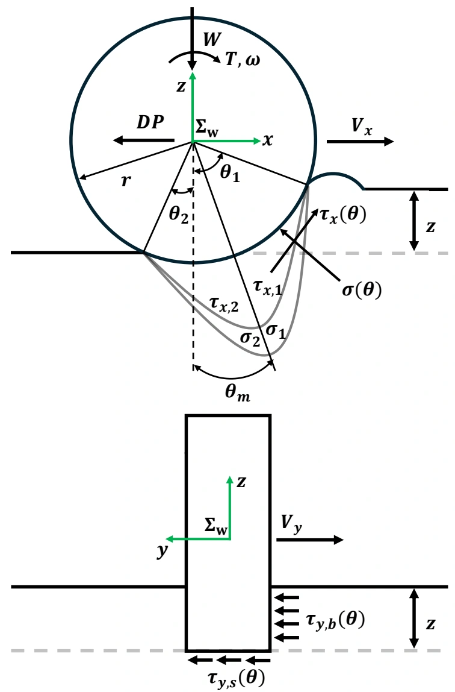
A closed-form lateral wheel-soil model combines transient dynamics with scalable bulldozing resistance for rover motion on soft terrain. Full-rover simulations evaluate its response to changing steering amplitudes and frequencies.
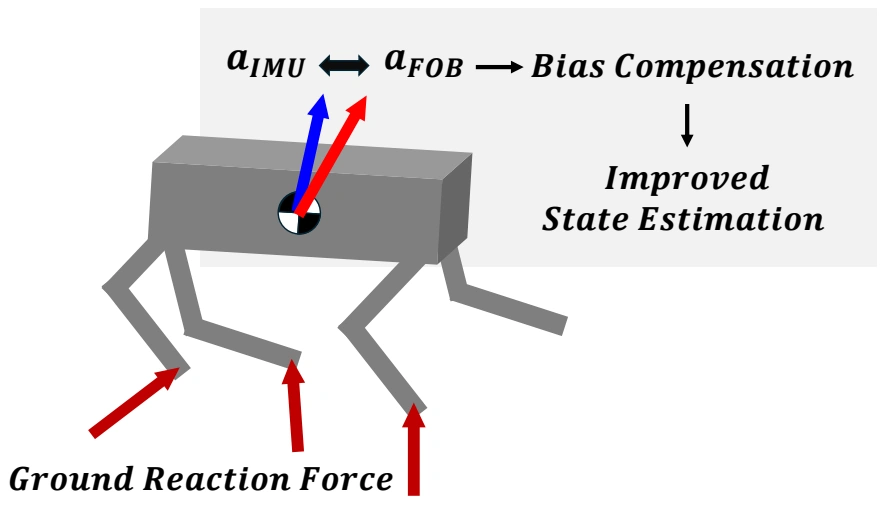
A force observer estimates body acceleration from ground reaction forces and compares it with IMU measurements to compensate accelerometer bias in a Kalman filter. Simulations evaluate reduced position drift and velocity estimation error without exteroceptive sensing.
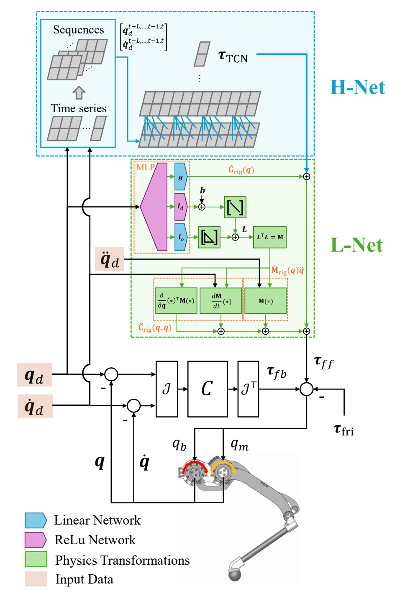
Combines a Lagrangian dynamics model with a Temporal Convolutional Network to capture history-dependent friction and coupling between joints. Robotic-leg experiments evaluate inverse dynamics estimation and feedforward tracking control.
A terramechanics-enhanced wheel model accounts for soil resistance to estimate rover driving forces from internal signals. ProjectChrono simulations on soft soil evaluate reduced estimation offsets without additional external force sensors.
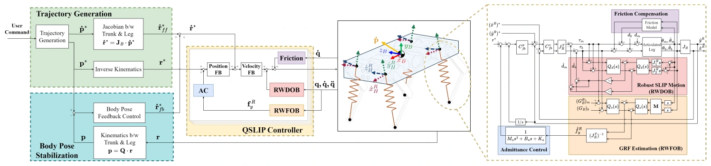
A rotating-workspace force observer and admittance control project Spring-Loaded Inverted Pendulum dynamics onto articulated legs. A Jacobian-based framework connects leg dynamics to trunk feedback control, with simulation comparisons against Virtual Model Control.
Publication list checked against Google Scholar on October 4, 2026. All displayed images are original figures from the linked papers.
Contact